5 R Visualization
5.1 Learning Objectives
In this chapter you will learn how to make the following visualizations:
- Histogram
- Box plot
- Bar chart
- Line graph
- Scatter plot
The code used to make the above visualizations in ?? will be provided and explained. Then, you will be asked to replicate the visualization using different data.
5.2 Set-up
To complete this chapter, you need to
- Start a R Markdown document
- Change the YAML to the following:
---
title: 'R Chapter 20'
author: 'Your name'
output:
html_document:
theme: spacelab
df_print: paged
toc: true
toc_float:
toc_collapsed: false
fig_width: 6
fig_height: 4
fig_align: "center"
---The newest additions to the YAML header are worth explaining. The toc stands for table of contents, which works really well for HTML output but not so much Word or PDF. Each level of the table of contents is dictated by the headings you include in your document. The arguments beginning with fig dictate the size and alignment of each figure your code produces. You can override these global arguments by including with code chunk options.
- Load the following packages and data
library(tidyverse)
library(data.table) # contains fread function to import from URL
library(fpp2)
countyComplete <- fread('http://openintro.org/data/tab-delimited/county_complete.txt')For everything but the line graph, we will use the countyComplete data within the openintro package. This dataset contains 3,143 counties and 53 variables. For the line graph, we will use the prisonLF data within the fpp2 package. This dataset is a quarterly time series of prisoner numbers in Australia from 2005 to 2016, split by sex, state, and legal status.
5.3 Grammar of graphics
R uses the grammar of graphics to make visualizations. You need to define three essential elements to produce a graph:
data: defines the dataset containing our variable(s) of interestaes: defines the variables used to generate the plot and how they are usedgeom: defines the kind of plot
We plot variables from data to aesthetic attributes of geometric objects. The function we use to do this is called ggplot. The generic code below shows the essential elements that will produce a default plot. We replace data with the name of the dataset. Within the aes parentheses, we tell R to assign one or more variables to a variety of attributes, such as x or y or color. What we include within aes depends on the type of plot we want to make, which is determined by the second line which always includes geom_ followed by the type of plot.
For example, the below code takes the variable gdpPercap from the dataset gapminder and maps it to the x axis aesthetic of a chosen geometric object called a histogram.

Data, aesthetics, and geometries are the essential elements needed to generate a graph. If you tell R these three elements correctly, it will produce a graph. There are additional elements that can be added to make graphs be more effective or look better that will be covered in class.
Aesthetics take variables in your data and assign them to attributes that correspond to the geometric object you intend to use. That is, aes and geom work together and must be compatible.
For example, you can’t generate a scatter plot–geom_point–if you only define an x aesthetic. You must define an x and y aesthetic for a scatter plot. Below is a list of available aesthetics and what they control:
x: x axisy: y axiscolor: differentiate groups by color; change color of outlines of shapessize: diameter of points based on values of a variable; static size of points or thickness of linesfill: fill a shape with coloralpha: transparencylinetype: line patternlabels: uses text instead of plot points; adds text to axesshape: differentiate groups by shape of plot points
The type of your variable also informs which aesthetic(s) to use.
Continuous variables:
- x and y
- size
- fill
Categorical variables:
- labels
- color and/or fill
- shape
- linetype
- size
5.4 Histogram
Here is the code used to make the histogram from Chapter ??. The dataset is named college_grad_students and the variable assigned to the x axis aesthetic is named grad_median, which is the median earnings of full-time employees with various graduate school majors. Then, a geom_histogram is added. The rest of the code inside the histogram parentheses, the labs parentheses (stands for labels), and the theme_classic is optional and used to make the histogram look more polished.
ggplot(college_grad_students, aes(x = grad_median)) +
geom_histogram(bins = 30, fill = 'steelblue', color = 'white') +
labs(x = 'Median earnings', y = 'Count of graduate majors') +
theme_classic()Figure 5.1: Histogram of full-time median earnings for different graduate school majors
Here is the code for the same histogram without the optional code. This is all that is needed to generate a histogram. In general, all plots require very little code if we do not care what they look like.
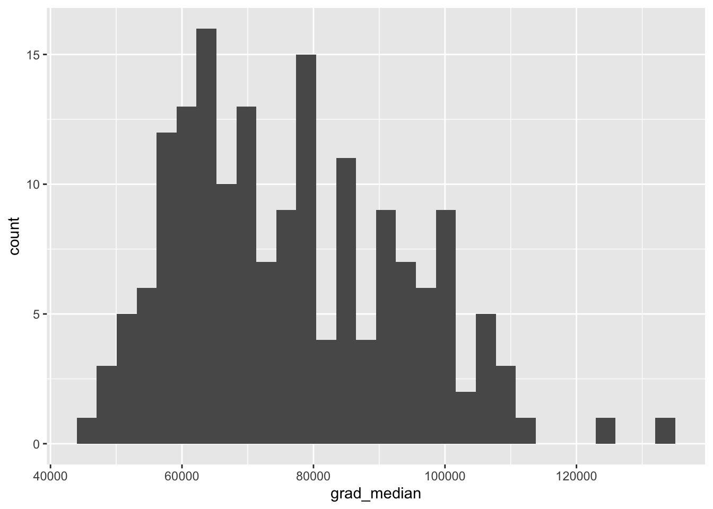
Exercise 1: Add a heading # Histogram.
In the countyComplete dataset, there is a variable named
bachelors_2010 that measures the percent of the county
population with a bachelor’s degree between 2006-2010. Suppose we want
to visualize the distribution of bachelors with a
histogram. Generate a simple, default histogram (no optional code unless
you want to add it).
5.5 Box plot
Below is the code used for the box plot in Chapter ??. Like the histogram, a box plot visualizes the distribution of one variable but uses descriptive measures median, first and third quartile, and identifies extreme values. Therefore, we only need to tell R which variable to assign to the either the x or y axis. Note that I assign grad_median to the y axis so that the box plot is vertical, which is merely a stylistic choice. Assigning grad_median to the x axis would make the box plot horizontal. Then, geom_boxplot is used to tell R to make a boxplot from grad_median.
ggplot(college_grad_students, aes(y = grad_median)) +
geom_boxplot(fill = 'steelblue') +
labs(y = 'Median earnings') +
theme_classic() +
theme(axis.line.x = element_blank(),
axis.text.x = element_blank(),
axis.ticks.x = element_blank())Figure 5.2: Box plot of full-time median earnings for different graduate school majors
Again, all the code after geom_boxplot is optional and was used to make the box plot look more polished. The fill = 'steelblue' changes the color of the box, labs is used to help the reader understand what grad_median measures, theme_classic is one of several themes built within R that changes the look of a plot, and the code inside the theme function removes all of the ink related to the x axis due to it being unnecessary. The theme function allows you to control every element of a plot. Unique themes can be created and saved for replication, saving time and avoiding errors.
Again, if we do not care how the box plot looks, all we need to make the plot is shown in the code below.
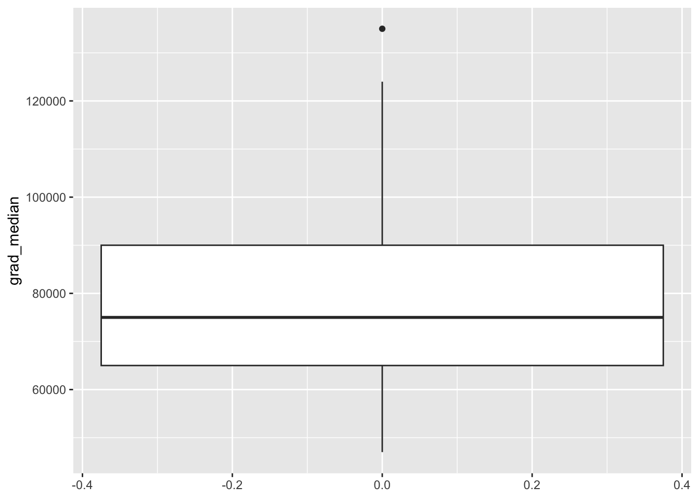
Exercise 2: Add another heading
# Boxplot. Generate a simple, default box plot for
bachelors_2010 (no optional code unless you want to add
it).
5.6 Bar chart
There are two functions that make bar graphs: geom_bar and geom_col. Recall that a bar chart is used to show counts or proportions of levels within a categorical variable. In Chapter ??, a bar chart was used to show the counts and proportions of graduate majors defined as having either high or low unemployment. The table below shows a few rows and variables from the data. Note that these data are disaggregated with respect to the count of majors belonging to high or low unemployment. That is, we need our bar chart to count the number of rows with “high” and “low” in the unemp_cat column. In this case, we should use geom_bar.
| major | grad_total | grad_unemployment_rate | unemp_cat | grad_median |
|---|---|---|---|---|
| Public Administration | 42661 | 0.059 | high | 75000 |
| Political Science And Government | 695725 | 0.039 | low | 92000 |
| International Relations | 69355 | 0.045 | low | 86000 |
| Public Policy | 15284 | 0.031 | low | 89000 |
Below is the code used to generate the side-by-side or dodged bar chart from Chapter ??. Note the use of geom_bar, which requires either an x or y aesthetic to be defined. Here, I assign the categorical variable unemp_cat to the x aesthetic, making the bar chart vertical. Assigning it to the y aesthetic would make the bar chart horizontal. Again, all the code past geom_bar is optional.
ggplot(gradschool, aes(x = unemp_cat)) +
geom_bar(fill = 'steelblue') +
labs(y = 'Count of degrees') +
theme_classic() +
theme(axis.line.x = element_blank(),
axis.ticks.x = element_blank(),
axis.title.x = element_blank())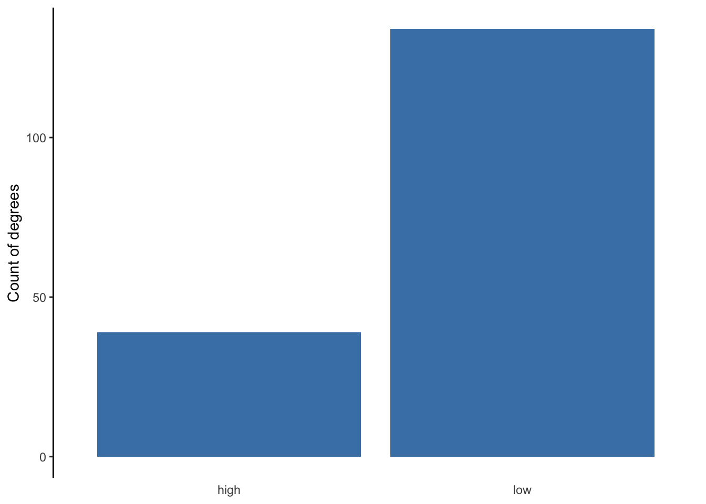
Here is what the bar chart looks like without the optional code.
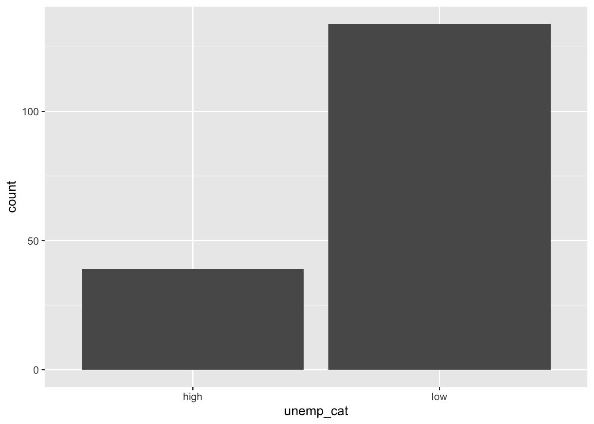
Below is the code used to generate the stacked bar chart showing counts, Figure ??. The code within aes is less intuitive. Since geom_bar requires an x or y aesthetic to be defined, I have to assign x to nothing via the blank quotation marks. The fill = unemp_cat tell R to stack the bar chart, filling the bar with the counts of high and low.
ggplot(gradschool, aes(x = "", fill = unemp_cat)) +
geom_bar() +
labs(y = 'Count of degrees',
fill = 'Unemployment') +
theme_classic() +
theme(axis.line.x = element_blank(),
axis.text.x = element_blank(),
axis.ticks.x = element_blank(),
axis.title.x = element_blank())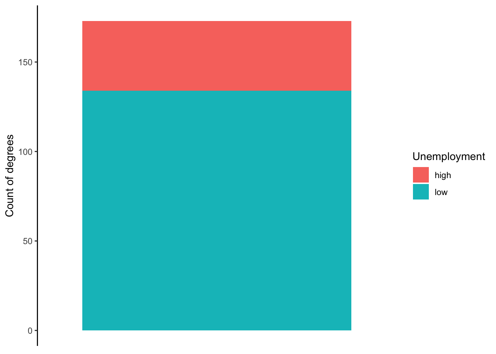
Below is what the stacked bar chart looks like by default.
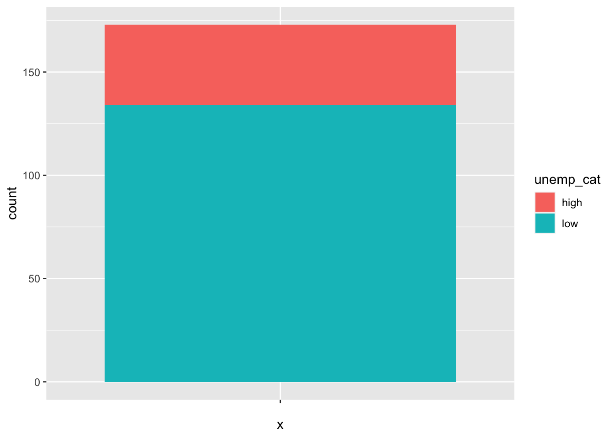
Lastly, the code below is used to show proportions rather than counts. The only substantive difference between this code and the code above is the use of position='fill' within the geom_bar function. This tells R to show proportions.
ggplot(gradschool, aes(x = "", fill = unemp_cat)) +
geom_bar(position = 'fill') +
labs(y = 'Proportion of degrees',
fill = 'Unemployment') +
theme_classic() +
theme(axis.line.x = element_blank(),
axis.text.x = element_blank(),
axis.ticks.x = element_blank(),
axis.title.x = element_blank())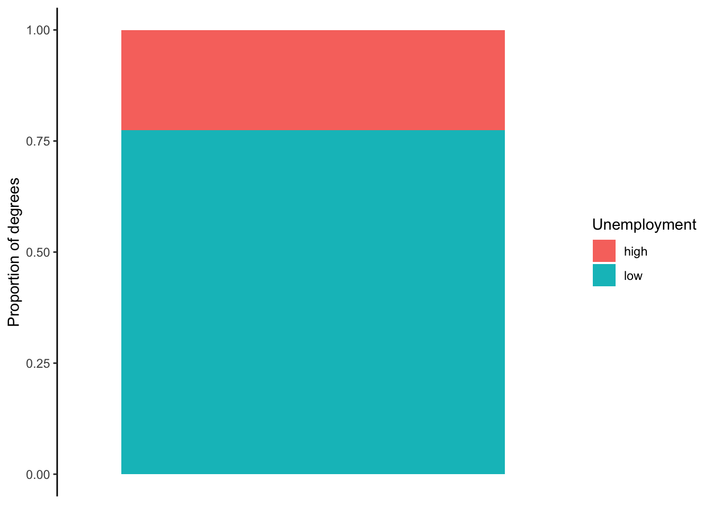
Exercise 3: Add a heading # Bar Chart.
Suppose we want to visualize how many counties each state has. That is,
we want to count how many rows belong to each state in the
countyComplete data using a bar chart. Generate a bar chart
that achieves this. Choose the type of bar chart you deem best.
When should we use geom_col instead? When our counts are already aggregated in our data. Refer back to the table above. Note that grad_total and grad_median contain the count of graduates within each major and their median pay, respectively. Therefore, we do not need R to count the number of rows in our data, but rather report each number already included in the data. The geom_col function takes these counts and visualizes them using a bar (or column) chart.
The below code shows how to generate Figure ??, which visualized the median pay for the four majors in the data related to those offered by SPIA. Median pay is simply a number in the data that does not need counting, thus the code uses geom_col, which requires both an x and y aesthetic to be defined. To allow room for the long names of each major, I made the bar chart horizontal by assigning major to the y aesthetic. Each bar visually represents the numbers for grad_median in the above table.
There is a new piece of code in the below chunk that can be used to reorder bars in ascending or descending order, which is generally preferred over random order of peaks and valleys. The reorder(major, -grad_median) code tells R to reorder the majors in the plot in ascending because of the minus sign; removing it would reverse the order to descending.
ggplot(gradschool_spia, aes(y = reorder(major, -grad_median), x = grad_median)) +
geom_col(fill = 'steelblue') +
theme_classic() +
labs(x = 'Median pay') +
theme(
axis.title.y = element_blank(),
axis.line.y = element_blank(),
axis.ticks.y = element_blank()
)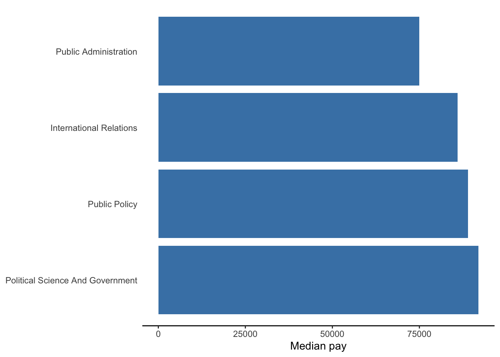
Below is what the bar chart looks like without the optional code.
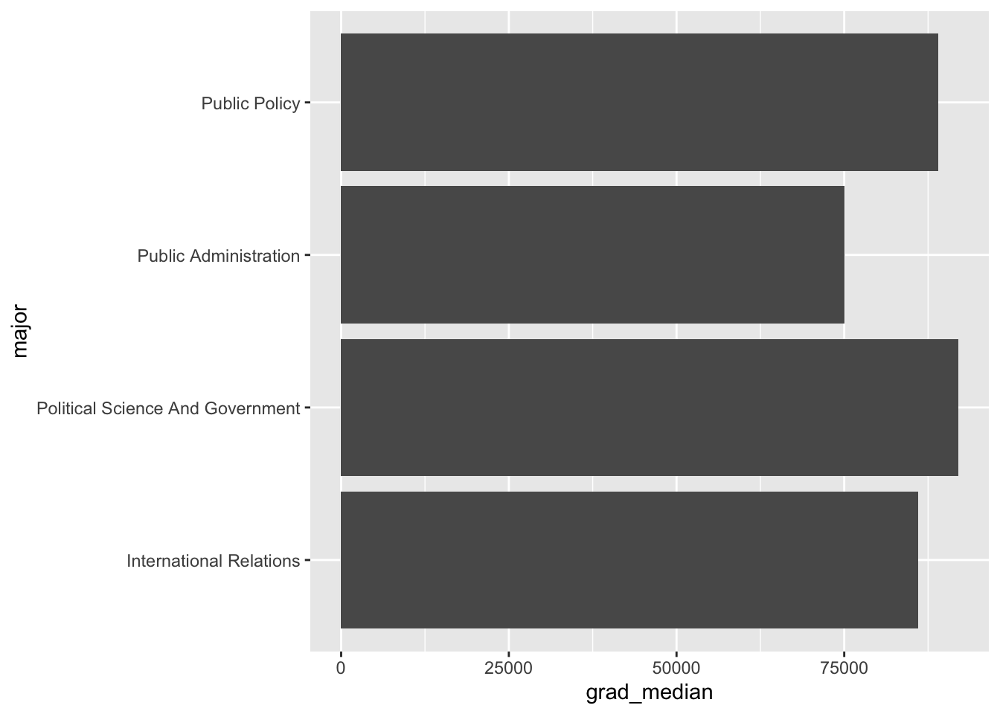
5.7 Scatter plot
The code below shows how the scatter plot in Chapter ?? was generated. This scatter plot actually contains two geometric objects. The geom_point function generates the scatter plot, and the geom_smooth function generates the regression/trend line. Note the assignment of x and y aesthetics that every scatter plot requires. Everything beyond geom_point is optional.
ggplot(gradschool, aes(x = grad_median, y = grad_total)) +
geom_point(color = 'steelblue', size = 2) +
geom_smooth(method = 'lm', se = FALSE,
linetype = 'dashed', color = 'black') +
scale_y_log10(label=scales::comma_format()) +
labs(y = 'Total degrees',
x = 'Median pay') +
theme_minimal()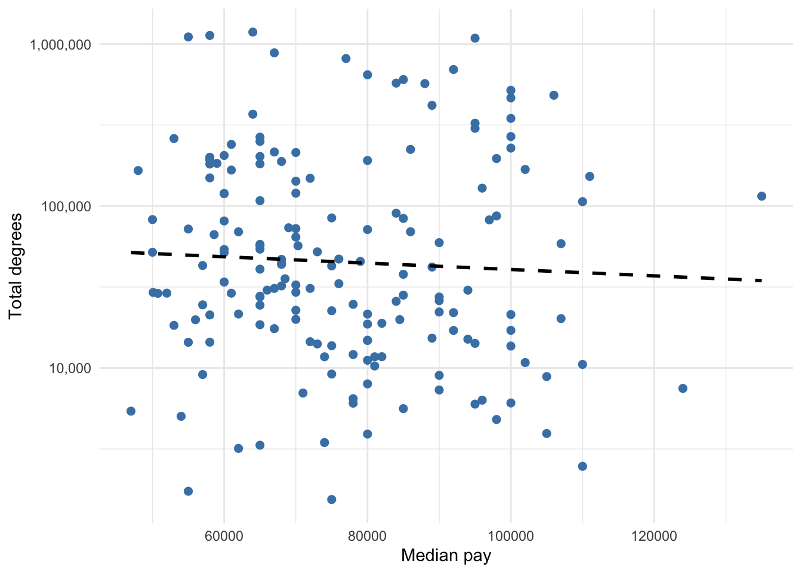
Below is the scatter plot without optional code.
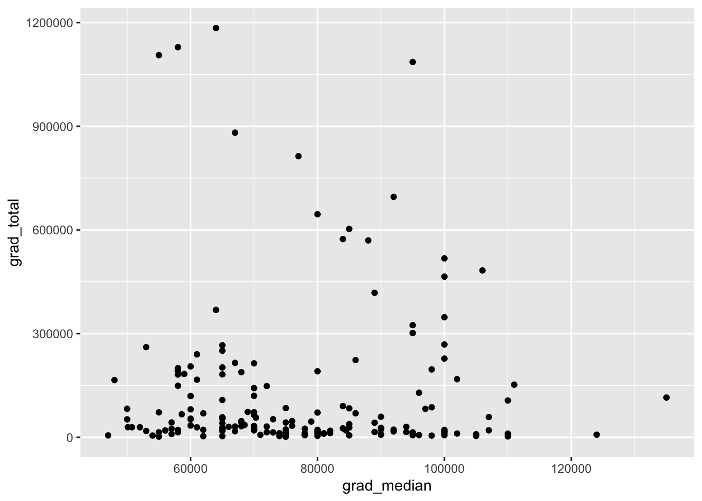
Exercise 4: Add a heading
# Scatterplot. Pick two variables in the
countyComplete data and plot their relationship using a
simple scatter plot.
5.8 Line graph
Line graphs are best for visualizing variables over time (i.e. time series). The prisonLF data separate prisoner counts by male vs. female, remanded vs. sentenced, and state. Therefore, there are four times series for each state. The code below generates a line graph for the time series of female prisoners who were sentenced in each Australia state.
Note how this code is different from the code before because I need to manipulate it before creating the plot. Specifically, I pipe the prisonLF data into the filter verb, which keeps only the rows with Female and Sentenced. Then, I pipe that result into the typical ggplot. However, I do not need to specify the dataset because it is already being piped into ggplot. Therefore, ggplot only needs aes and geom to be defined. Time t is assigned to the x aesthetic, count is assigned to the y aesthetic, and state is assigned to the color aesthetic. The color aesthetic is a common way to plot multiple groups. It also provides a legend by default. The geom_line function generates a line graph.
prisonLF %>%
filter(gender == 'Female' & legal == 'Sentenced') %>%
ggplot(aes(x = t, y = count, color = state)) +
geom_line() +
labs(color = 'State', y = 'Female Sentenced Prisoners', x = '') +
theme_minimal()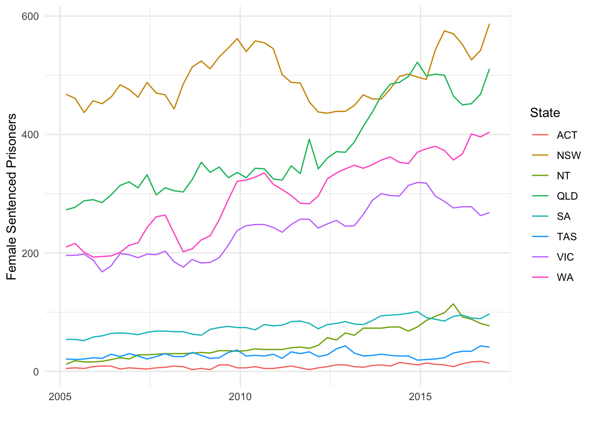
Exercise 5: Add a heading # Linegraph.
Create a line graph for male prisoners who were sentenced by state.